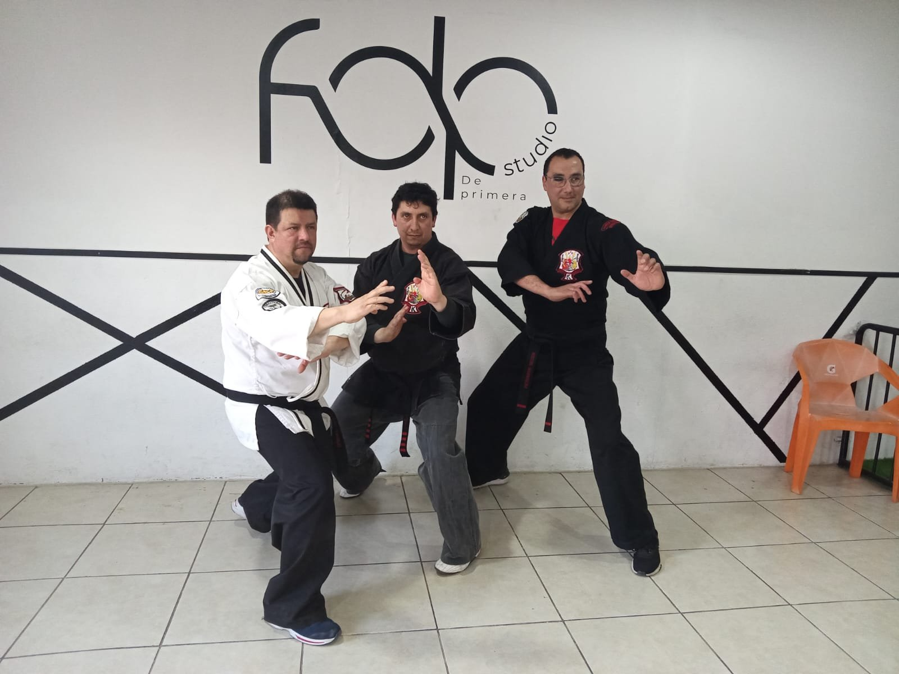

Tu primera clase de Kenpo: qué esperar y cómo prepararte
Cómo se estructura una clase, qué llevar y por qué es completamente normal sentirse perdido los primeros días.

La barrera más grande para empezar artes marciales casi nunca es física. Es no saber qué va a pasar cuando cruces la puerta. Así que vamos a sacar esa duda del camino.
Cómo es una clase típica
Las clases siguen una estructura estable, y esa repetición es parte del método: saber qué viene libera la cabeza para concentrarse en lo que estás haciendo.
- Saludo de apertura. Se entra al espacio de entrenamiento con un saludo formal. Marca el inicio y ordena al grupo.
- Calentamiento. Movilidad, trote suave y ejercicios de activación. Se adapta al nivel del grupo.
- Técnica. El instructor muestra el movimiento, lo descompone y corrige uno por uno.
- Práctica. Se repite con un compañero, siempre con control y sin contacto fuerte.
- Cierre. Vuelta a la calma, comentarios de la clase y saludo de salida.
No necesitas experiencia ni estar en forma
Todos los alumnos parten como cinturón blanco. No hay prueba de ingreso ni nivel mínimo de condición física. El trabajo se ajusta a lo que cada persona puede hacer hoy, y avanza desde ahí.
Si llevas años sin hacer deporte, lo vas a sentir. Eso es esperable y se pasa en unas pocas semanas.
Qué llevar
- Ropa deportiva cómoda que te permita moverte con libertad.
- Una botella de agua.
- Llegar unos minutos antes para presentarte con el instructor.
- Avisar si tienes alguna lesión o condición de salud, por leve que parezca.
El respeto y el saludo no son adorno
El saludo al entrar y salir, pedir permiso para interrumpir, esperar el turno. Suena ceremonioso desde afuera, pero cumple una función concreta: en un espacio donde se practican técnicas de contacto, el protocolo es lo que mantiene a todos seguros.
Vas a sentirte descoordinado, y está bien
La primera vez que intentas una combinación de manos y piernas al mismo tiempo, el cuerpo no responde. A nadie le sale. La técnica se construye con repetición, no con talento, y por eso el programa está dividido en grados: cada uno consolida lo anterior antes de sumar algo nuevo.